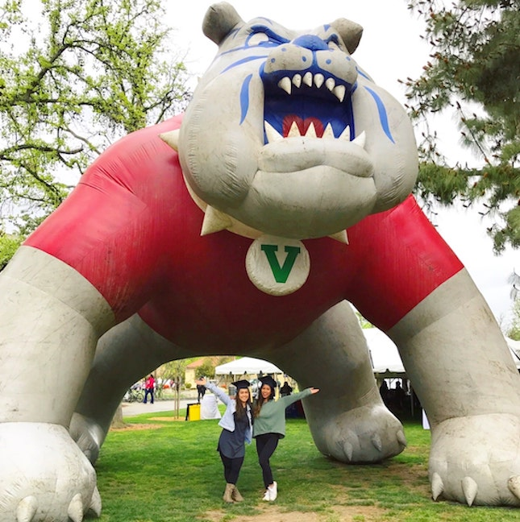

I graduated from Fresno City College first from 2010 - 2013 and then California State University 2013 - 2017.
I devoted my early college years to become a dietitian, but later on I discovered my passion was set for something else.
I took a 3 year hiatus break to travel and discover myelf. In the process I came back to FCC to pursue a new career in the tech field where
I believe I will be happy. Everyone has a different timeline and sometimes you got to follow your own path. It's going to
be a difficult process learning all of this new information but I am ready for the challenge.